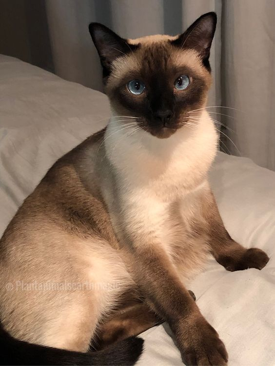
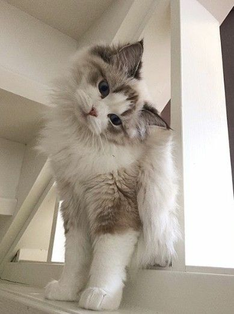
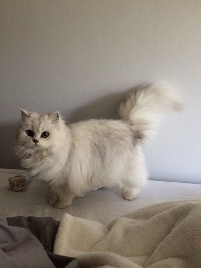

MUST HAVE CAT BREEDS
SIAMESE♡

Siamese cats are distinguished by their elegant, distinct appearance. Although many Siamese cats have silver-gray coats and blue eyes, these adorable felines can also have orange, brown, cream, blue, or lilac coats, among other colors.
RAGDOLL♡

Ragdolls are large, unhurried semi-longhaired cats with appealing blue eyes. Because the Ragdoll is a pointed breed, its body is lighter in color than the points (the face, legs, tail and ears). The ideal Ragdoll is a well-balanced cat with no extreme characteristics. Ragdolls mature slowly, reaching full size and weight at four years old and full coat color at two years old.
PERSIAN♡

Persian cats are medium to large in size, weighing seven to twelve pounds and standing fifteen to twenty-five inches tall. They have large eyes and small, rounded ears on top of their spherical skulls.